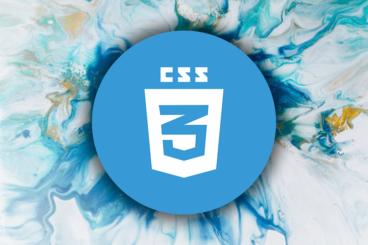
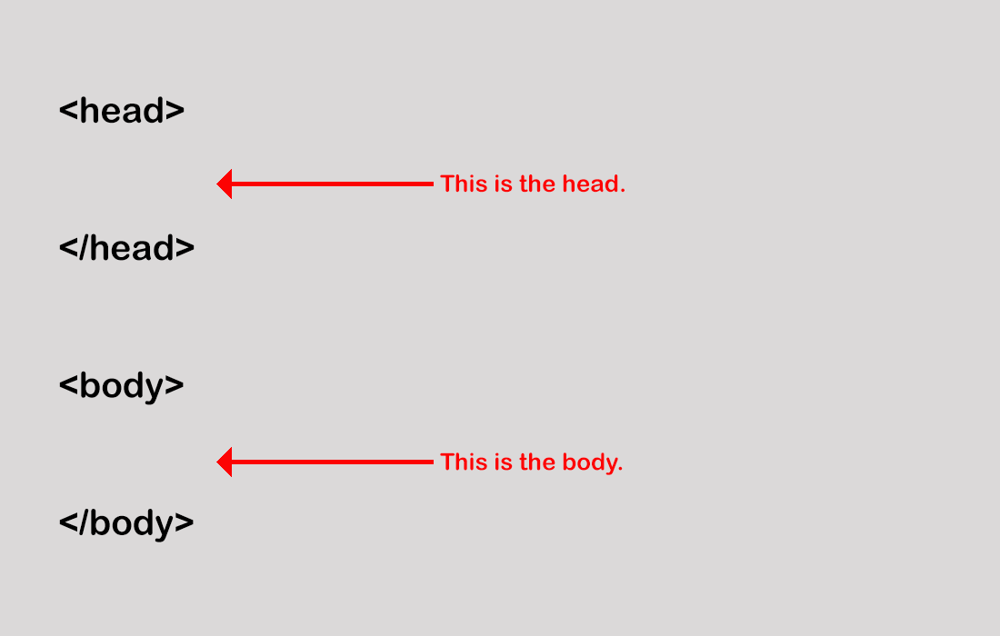
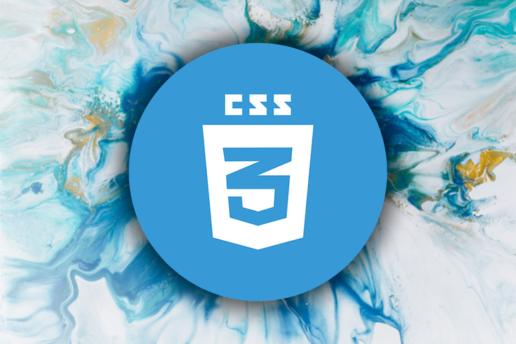
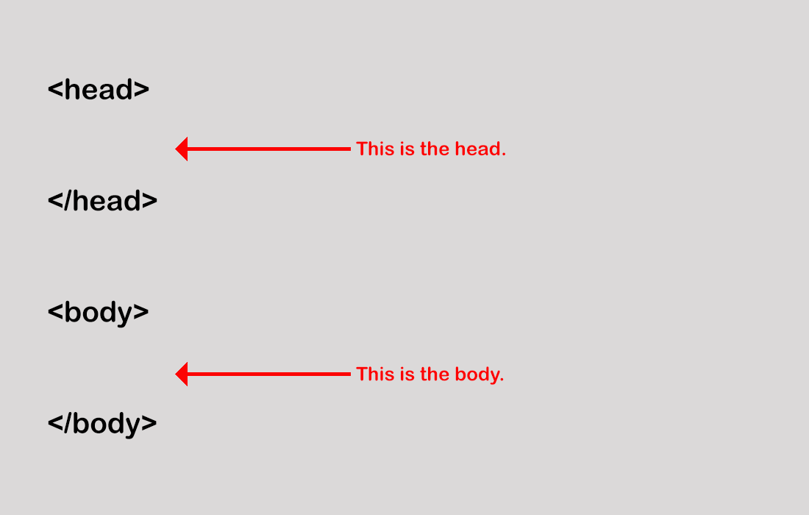

My name is Maya i study datamaskian in KVN school i live in Norge with my familie
i go to school evry day we have five days a week we also have nice
teacher in the classroom who help the students studing in Norway
is different fron any other country and there is a completely
different system.about my hobby: i like reading and drawinhg also
i like going on long trip i like sports i have made fifty podcasts i likr
writing short stories
internett er et nettverk av nettverk fordi mange lokale nettverk
foreksempel hjemmenettverk akolenettverk eller bedriftsnettver Hva er HTML?
HTML er et språk som brukes til å lage nettsider HTML er et
programmeringsspråk, det vil si at det definerer struktur og ikke utseende
Hva er css css er stillspråk om står cascading style sheet
det brukes til å sette såkalte stiler på html - elementene våre ,og gir oss
langt flere muligheter for å posisjonere de slik vi ønsker .
img er The required src attribute specifies the URL of the image.
There are two ways to specify the URL in the src attribute:
1. Absolute URL - Links to an external image that is hosted on another website.
Notes: External images might be under copyright. If you do not get permission to use it,
you may be in violation of copyright laws. In addition, you
cannot control external images; it can suddenly be removed or changed


 


